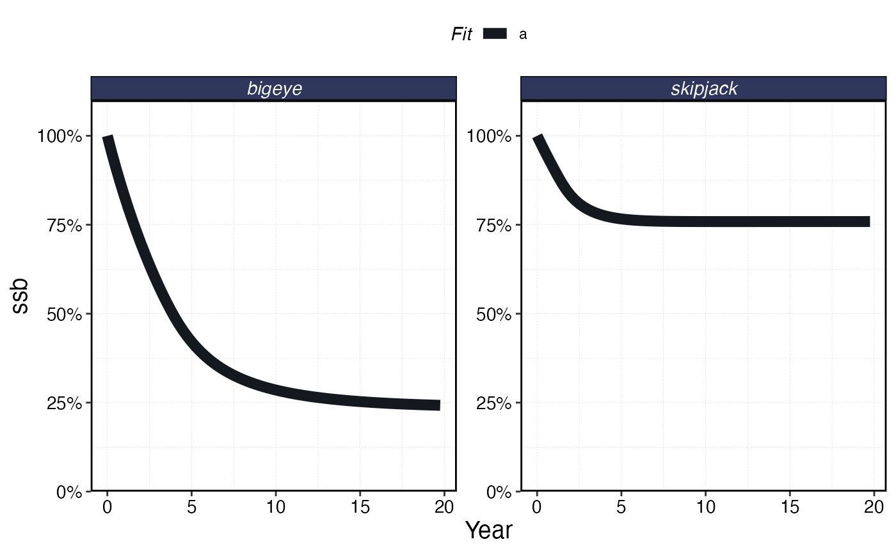
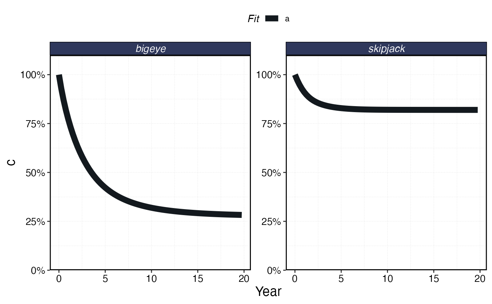
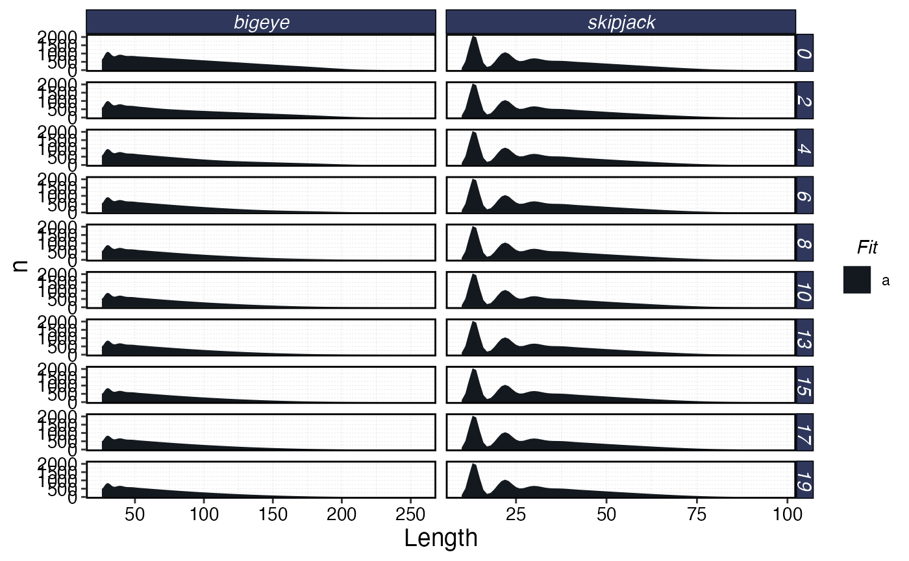
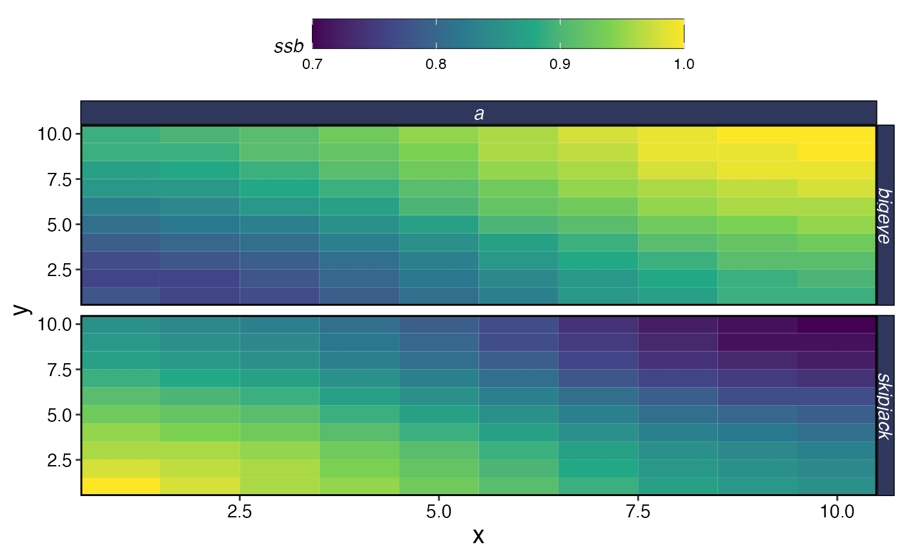
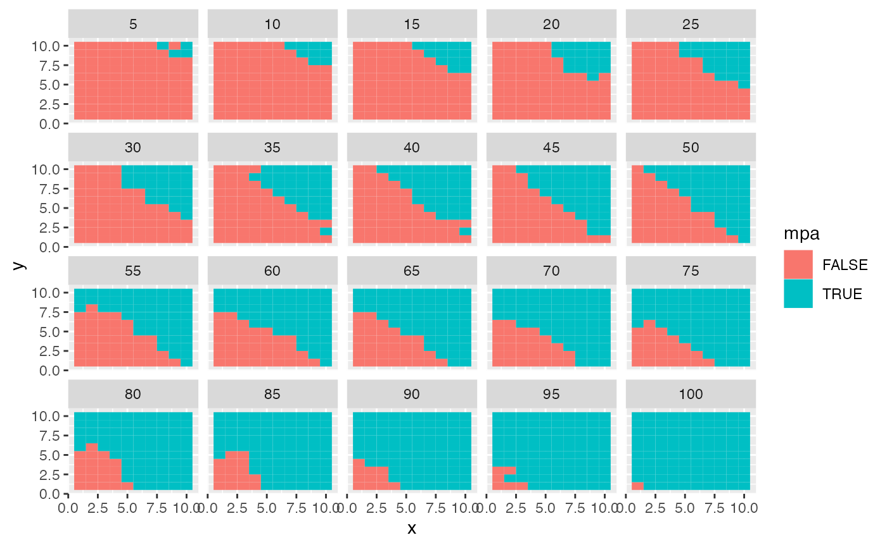

One of the hardest questions of marine protected area (MPA) design is
the simple “how big should it be and where should it go”?
marlin can’t tell you how big it should be, but it
can help you evaluate the impacts to different objectives of
different MPA networks, and if you supply it with an objective function
weighting scheme, the best network to maximize your objective
function.
This is achieved with the optimize_mpa function, that at
its core requires an alpha parameter that specifies the
relative weighting of conservation to economic interests, where 1 means
that the only objective is conservation, zero means the only objective
is economic.
optimize_mpa then finds the MPA network of a specified
size that maximizes your objective function.
library(marlin)
library(tidyverse)
#> ── Attaching packages ─────────────────────────────────────── tidyverse 1.3.1 ──
#> ✔ ggplot2 3.3.6 ✔ purrr 0.3.4
#> ✔ tibble 3.1.8 ✔ dplyr 1.0.10
#> ✔ tidyr 1.2.0 ✔ stringr 1.4.1
#> ✔ readr 2.1.2 ✔ forcats 0.5.1
#> ── Conflicts ────────────────────────────────────────── tidyverse_conflicts() ──
#> ✖ dplyr::filter() masks stats::filter()
#> ✖ dplyr::lag() masks stats::lag()
resolution <- 10
years <- 20
seasons <- 4
steps <- years * seasons
time_step <- 1 / seasons
# for now make up some habitat
skipjack_habitat <- expand_grid(x = 1:resolution, y = 1:resolution) %>%
dplyr::mutate(habitat = dnorm((x ^ 2 + y ^ 2), 20, 200)) %>%
pivot_wider(names_from = y, values_from = habitat) %>%
select(-x) %>%
as.matrix()
bigeye_habitat <- expand_grid(x = 1:resolution, y = 1:resolution) %>%
mutate(habitat = dnorm((x ^ 2 + y ^ 2), 300, 100)) %>%
pivot_wider(names_from = y, values_from = habitat) %>%
select(-x) %>%
as.matrix()
bigeye_habitat2 <- expand_grid(x = 1:resolution, y = 1:resolution) %>%
mutate(habitat = dnorm((x ^ .2 + y ^ .2), 100, 100)) %>%
pivot_wider(names_from = y, values_from = habitat) %>%
select(-x) %>%
as.matrix()
fauna <-
list(
"skipjack" = create_critter(
scientific_name = "Katsuwonus pelamis",
base_habitat = list(skipjack_habitat, skipjack_habitat), # pass habitat as lists
season_blocks = list(c(1, 2), c(3, 4)), # seasons each habitat apply to
recruit_habitat = skipjack_habitat,
adult_diffusion = 2, # standard deviation of the number of patches moved by adults
rec_form = 1, # recruitment form, where 1 implies local recruitment
seasons = seasons,
init_explt = 0.4,
explt_type = "f"
),
"bigeye" = create_critter(
scientific_name = "Thunnus obesus",
base_habitat = list(bigeye_habitat, bigeye_habitat2), # pass habitat as lists
season_blocks = list(c(1, 2), c(3, 4)), # seasons each habitat apply to
recruit_habitat = bigeye_habitat,
adult_diffusion = 1,
rec_form = 1,
seasons = seasons,
init_explt = 0.7,
explt_type = "f"
)
)
fleets <- list(
"longline" = create_fleet(
list(
"skipjack" = Metier$new(
critter = fauna$skipjack,
price = 100,
# price per unit weight
sel_form = "logistic",
# selectivity form, one of logistic or dome
sel_start = .3,
# percentage of length at maturity that selectivity starts
sel_delta = .1,
# additional percentage of sel_start where selectivity asymptotes
catchability = .01,
# overwritten by tune_fleet but can be set manually here
p_explt = 1
),
"bigeye" = Metier$new(
critter = fauna$bigeye,
price = 10,
sel_form = "logistic",
sel_start = .1,
sel_delta = .01,
catchability = 0,
p_explt = 1
)
),
base_effort = resolution ^ 2,
resolution = resolution
),
"purseseine" = create_fleet(list(
skipjack = Metier$new(
critter = fauna$skipjack,
price = 100,
sel_form = "logistic",
sel_start = 0.25,
sel_delta = .1,
catchability = .01,
p_explt = 0.9
),
bigeye = Metier$new(
critter = fauna$bigeye,
price = 100,
sel_form = "logistic",
sel_start = .25,
sel_delta = .5,
catchability = .01,
p_explt = 1
)
),
base_effort = resolution ^ 2, resolution = resolution
)
)
a <- Sys.time()
fleets <- tune_fleets(fauna, fleets)
Sys.time() - a
#> Time difference of 2.818566 secs
# run simulations
# run the simulation using marlin::simmar
a <- Sys.time()
sim <- simmar(fauna = fauna,
fleets = fleets,
years = years)
Sys.time() - a
#> Time difference of 0.5498688 secs
# a <- Sys.time()
processed_marlin <- process_marlin(sim = sim, time_step = time_step, keep_age = TRUE)
# Sys.time() - a
plot_marlin(processed_marlin)
plot_marlin(processed_marlin, plot_var = "c")
plot_marlin(processed_marlin, plot_var = "n", plot_type = "length", fauna = fauna)
#> Warning in plot_marlin(processed_marlin, plot_var = "n", plot_type = "length", :
#> trying to plot too many steps at once, cutting down to 10
#> dropping recruits from plot since drop_recruits = TRUE
plot_marlin(processed_marlin, plot_var = "ssb", plot_type = "space")
#> Warning in plot_marlin(processed_marlin, plot_var = "ssb", plot_type = "space"):
#> Can only plot one time step for spatial plots, defaulting to last of the
#> supplied steps
mpa_network <- optimize_mpa(fauna = fauna, fleets = fleets, resolution = resolution,
starting_conditions = sim[[length(sim)]], alpha = 0.75)
#> 1% done
#> 2% done
#> 3% done
#> 4% done
#> 5% done
#> 6% done
#> 7% done
#> 8% done
#> 9% done
#> 10% done
#> 11% done
#> 12% done
#> 13% done
#> 14% done
#> 15% done
#> 16% done
#> 17% done
#> 18% done
#> 19% done
#> 20% done
#> 21% done
#> 22% done
#> 23% done
#> 24% done
#> 25% done
#> 26% done
#> 27% done
#> 28% done
#> 29% done
#> 30% done
#> 31% done
#> 32% done
#> 33% done
#> 34% done
#> 35% done
#> 36% done
#> 37% done
#> 38% done
#> 39% done
#> 40% done
#> 41% done
#> 42% done
#> 43% done
#> 44% done
#> 45% done
#> 46% done
#> 47% done
#> 48% done
#> 49% done
#> 50% done
#> 51% done
#> 52% done
#> 53% done
#> 54% done
#> 55% done
#> 56% done
#> 57% done
#> 58% done
#> 59% done
#> 60% done
#> 61% done
#> 62% done
#> 63% done
#> 64% done
#> 65% done
#> 66% done
#> 67% done
#> 68% done
#> 69% done
#> 70% done
#> 71% done
#> 72% done
#> 73% done
#> 74% done
#> 75% done
#> 76% done
#> 77% done
#> 78% done
#> 79% done
#> 80% done
#> 81% done
#> 82% done
#> 83% done
#> 84% done
#> 85% done
#> 86% done
#> 87% done
#> 88% done
#> 89% done
#> 90% done
#> 91% done
#> 92% done
#> 93% done
#> 94% done
#> 95% done
#> 96% done
#> 97% done
#> 98% done
#> 99% done
#> 100% done
#> New names:
#> • `critter` -> `critter...3`
#> • `critter` -> `critter...5`
#> • `critter` -> `critter...7`
mpa_network$mpa_network %>%
filter(p_protected %% 5 == 0) %>%
ggplot(aes(x,y, fill = mpa)) +
geom_tile() +
facet_wrap(~p_protected)